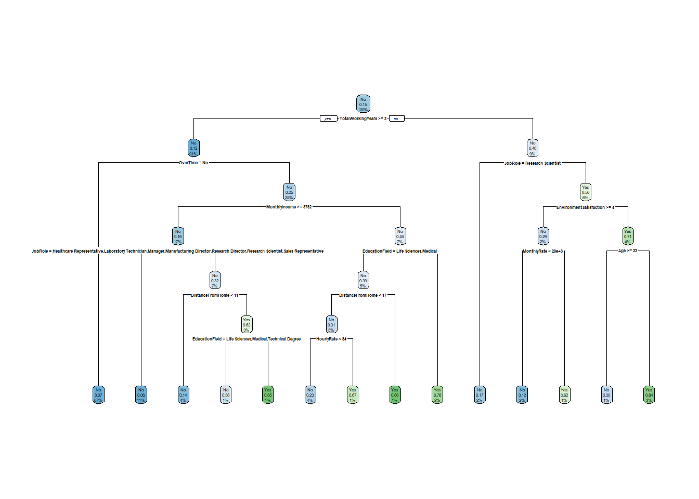
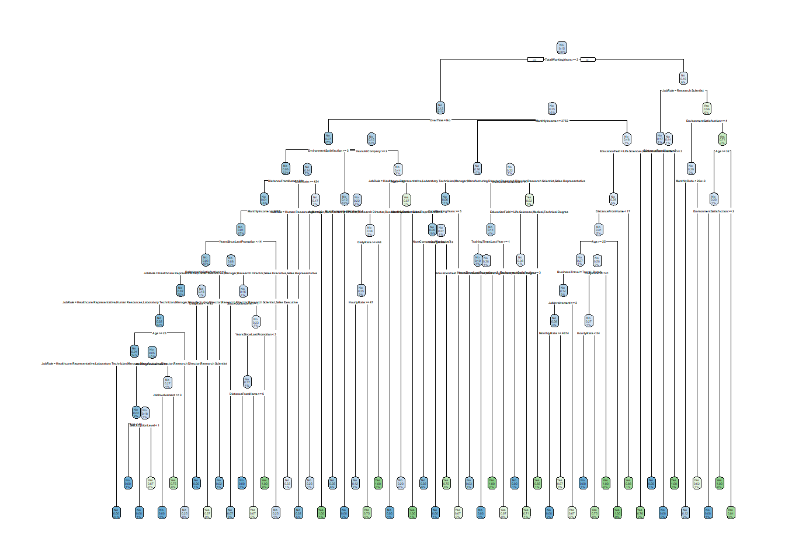
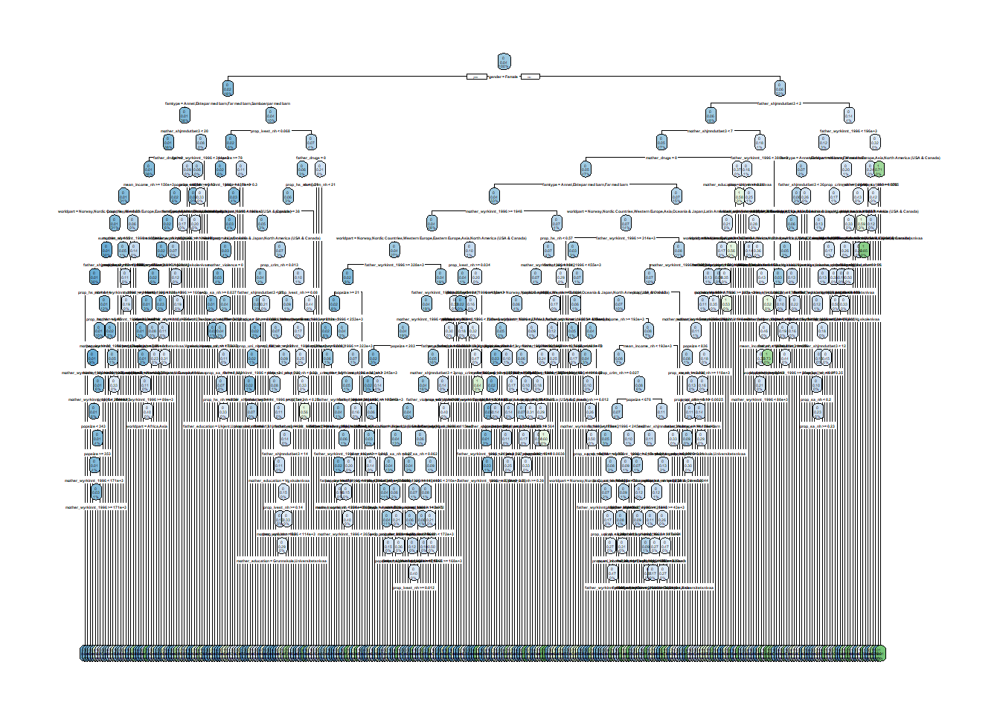
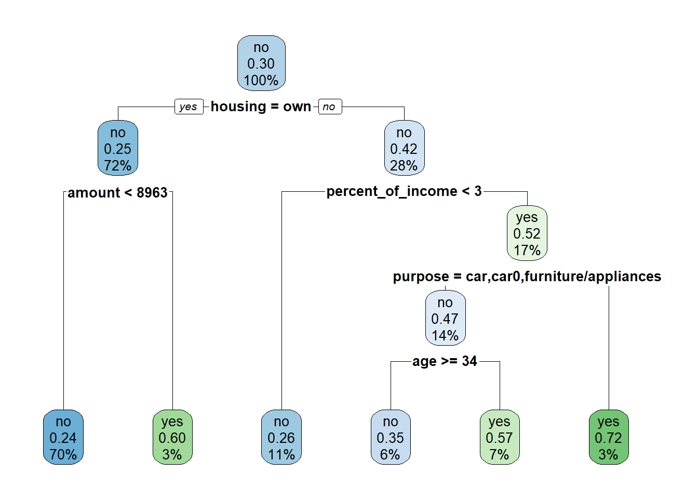
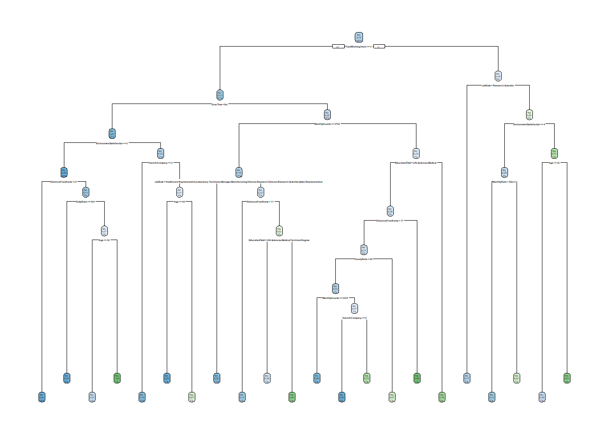
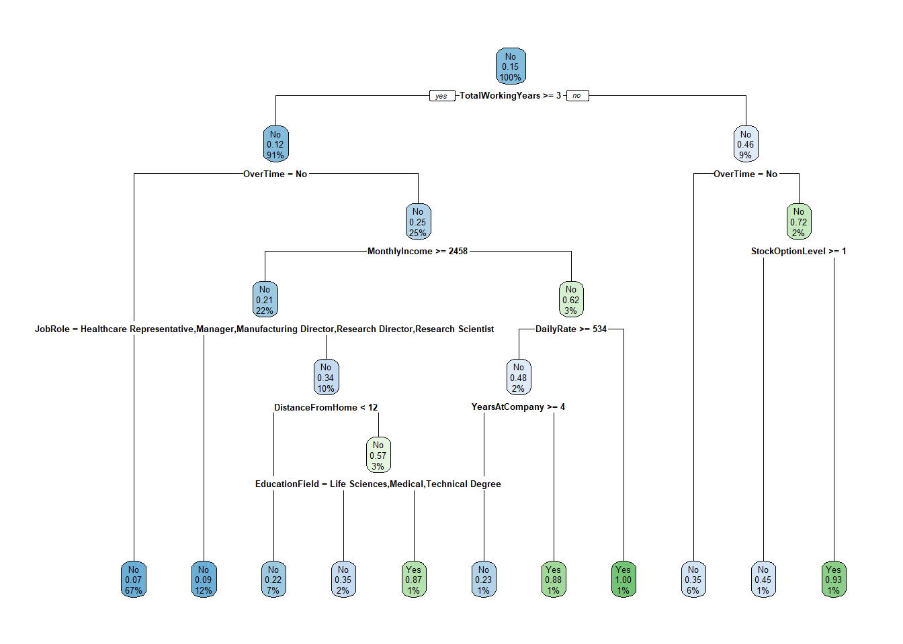

library(tidyverse) # datahåndtering, grafikk og glimpse()
library(rsample) # for å dele data i training og testing
library(rpart) # funksjoner for CART
library(rpart.plot) # funksjon for å plotte CART
library(caret) # inneholder funksjon for confusion matrix4 Klassifikasjonstrær
I dette kapittelt skal vi bruke følgende pakker:
Klassifikasjonstrær (CART: Classification and Regression Trees) er en helt annen tilnærming enn regresjon. I stedet for å estimere koeffisienter i en ligning, deler algoritmen dataene i stadig mindre grupper basert på verdier av prediktorene. Resultatet er et “tre” som kan leses som en serie if-else-regler. Fordelen er at trær er enkle å tolke og kan fange opp ikke-lineære sammenhenger og interaksjoner automatisk. Ulempen er at enkelttrær kan være ustabile og har en tendens til overfitting.
Vi skal her bruke Attrition-datasettet fra kapittelet om logistisk regresjon. Utfallsvariabelen er Attrition som angir om en arbeidstaker slutter i jobben (“Yes”) eller ikke (“No”). Vi starter med å lage en logistisk regresjonsmodell som sammenligningsgrunnlag, og deretter bygger vi klassifikasjonstrær.
4.1 Lese inn data
attrition <- readRDS("data/attrition.rds") %>%
select(-EmployeeNumber)
glimpse(attrition)Rows: 1,470
Columns: 31
$ Age <int> 41, 49, 37, 33, 27, 32, 59, 30, 38, 36, 35, 2…
$ Attrition <fct> Yes, No, Yes, No, No, No, No, No, No, No, No,…
$ BusinessTravel <fct> Travel_Rarely, Travel_Frequently, Travel_Rare…
$ DailyRate <int> 1102, 279, 1373, 1392, 591, 1005, 1324, 1358,…
$ Department <fct> Sales, Research & Development, Research & Dev…
$ DistanceFromHome <int> 1, 8, 2, 3, 2, 2, 3, 24, 23, 27, 16, 15, 26, …
$ Education <int> 2, 1, 2, 4, 1, 2, 3, 1, 3, 3, 3, 2, 1, 2, 3, …
$ EducationField <fct> Life Sciences, Life Sciences, Other, Life Sci…
$ EnvironmentSatisfaction <int> 2, 3, 4, 4, 1, 4, 3, 4, 4, 3, 1, 4, 1, 2, 3, …
$ Gender <fct> Female, Male, Male, Female, Male, Male, Femal…
$ HourlyRate <int> 94, 61, 92, 56, 40, 79, 81, 67, 44, 94, 84, 4…
$ JobInvolvement <int> 3, 2, 2, 3, 3, 3, 4, 3, 2, 3, 4, 2, 3, 3, 2, …
$ JobLevel <int> 2, 2, 1, 1, 1, 1, 1, 1, 3, 2, 1, 2, 1, 1, 1, …
$ JobRole <fct> Sales Executive, Research Scientist, Laborato…
$ JobSatisfaction <int> 4, 2, 3, 3, 2, 4, 1, 3, 3, 3, 2, 3, 3, 4, 3, …
$ MaritalStatus <fct> Single, Married, Single, Married, Married, Si…
$ MonthlyIncome <int> 5993, 5130, 2090, 2909, 3468, 3068, 2670, 269…
$ MonthlyRate <int> 19479, 24907, 2396, 23159, 16632, 11864, 9964…
$ NumCompaniesWorked <int> 8, 1, 6, 1, 9, 0, 4, 1, 0, 6, 0, 0, 1, 0, 5, …
$ OverTime <fct> Yes, No, Yes, Yes, No, No, Yes, No, No, No, N…
$ PercentSalaryHike <int> 11, 23, 15, 11, 12, 13, 20, 22, 21, 13, 13, 1…
$ PerformanceRating <int> 3, 4, 3, 3, 3, 3, 4, 4, 4, 3, 3, 3, 3, 3, 3, …
$ RelationshipSatisfaction <int> 1, 4, 2, 3, 4, 3, 1, 2, 2, 2, 3, 4, 4, 3, 2, …
$ StockOptionLevel <int> 0, 1, 0, 0, 1, 0, 3, 1, 0, 2, 1, 0, 1, 1, 0, …
$ TotalWorkingYears <int> 8, 10, 7, 8, 6, 8, 12, 1, 10, 17, 6, 10, 5, 3…
$ TrainingTimesLastYear <int> 0, 3, 3, 3, 3, 2, 3, 2, 2, 3, 5, 3, 1, 2, 4, …
$ WorkLifeBalance <int> 1, 3, 3, 3, 3, 2, 2, 3, 3, 2, 3, 3, 2, 3, 3, …
$ YearsAtCompany <int> 6, 10, 0, 8, 2, 7, 1, 1, 9, 7, 5, 9, 5, 2, 4,…
$ YearsInCurrentRole <int> 4, 7, 0, 7, 2, 7, 0, 0, 7, 7, 4, 5, 2, 2, 2, …
$ YearsSinceLastPromotion <int> 0, 1, 0, 3, 2, 3, 0, 0, 1, 7, 0, 0, 4, 1, 0, …
$ YearsWithCurrManager <int> 5, 7, 0, 0, 2, 6, 0, 0, 8, 7, 3, 8, 3, 2, 3, …Vi splitter datasettet i training og testing:
set.seed(426)
attrition_split <- initial_split(attrition, prop = .7)
training <- training(attrition_split)
testing <- testing(attrition_split)4.2 Logistisk regresjon som baseline
Før vi lager klassifikasjonstrær er det nyttig å ha et sammenligningsgrunnlag. Vi bruker logistisk regresjon med alle variable:
est.glm <- glm(Attrition ~ ., data = training, family = "binomial")
summary(est.glm)
Call:
glm(formula = Attrition ~ ., family = "binomial", data = training)
Coefficients:
Estimate Std. Error z value Pr(>|z|)
(Intercept) -1.171e+01 7.504e+02 -0.016 0.987554
Age -3.647e-02 1.688e-02 -2.161 0.030667 *
BusinessTravelTravel_Frequently 1.648e+00 4.983e-01 3.308 0.000940 ***
BusinessTravelTravel_Rarely 9.891e-01 4.541e-01 2.178 0.029387 *
DailyRate -3.576e-04 2.753e-04 -1.299 0.193941
DepartmentResearch & Development 1.298e+01 7.504e+02 0.017 0.986196
DepartmentSales 1.357e+01 7.504e+02 0.018 0.985571
DistanceFromHome 4.746e-02 1.361e-02 3.488 0.000486 ***
Education -1.807e-02 1.084e-01 -0.167 0.867654
EducationFieldLife Sciences -3.399e-01 1.129e+00 -0.301 0.763441
EducationFieldMarketing 3.270e-01 1.179e+00 0.277 0.781525
EducationFieldMedical -5.647e-01 1.133e+00 -0.498 0.618260
EducationFieldOther -5.878e-01 1.207e+00 -0.487 0.626217
EducationFieldTechnical Degree 5.805e-01 1.154e+00 0.503 0.615076
EnvironmentSatisfaction -5.414e-01 1.053e-01 -5.140 2.74e-07 ***
GenderMale 2.498e-01 2.252e-01 1.109 0.267218
HourlyRate -2.457e-03 5.598e-03 -0.439 0.660717
JobInvolvement -5.900e-01 1.538e-01 -3.835 0.000126 ***
JobLevel 1.022e-01 3.942e-01 0.259 0.795375
JobRoleHuman Resources 1.399e+01 7.504e+02 0.019 0.985126
JobRoleLaboratory Technician 1.562e+00 5.660e-01 2.760 0.005777 **
JobRoleManager -1.454e+00 1.269e+00 -1.145 0.252018
JobRoleManufacturing Director -3.797e-01 6.172e-01 -0.615 0.538366
JobRoleResearch Director -2.476e+00 1.256e+00 -1.971 0.048692 *
JobRoleResearch Scientist 2.632e-01 5.858e-01 0.449 0.653273
JobRoleSales Executive -1.863e-01 1.594e+00 -0.117 0.906944
JobRoleSales Representative 1.378e+00 1.648e+00 0.836 0.403020
JobSatisfaction -3.369e-01 1.022e-01 -3.298 0.000975 ***
MaritalStatusMarried 2.514e-01 3.242e-01 0.775 0.438093
MaritalStatusSingle 9.638e-01 4.225e-01 2.281 0.022524 *
MonthlyIncome 8.287e-05 1.030e-04 0.804 0.421245
MonthlyRate 6.922e-06 1.558e-05 0.444 0.656792
NumCompaniesWorked 1.638e-01 4.800e-02 3.413 0.000642 ***
OverTimeYes 2.007e+00 2.437e-01 8.236 < 2e-16 ***
PercentSalaryHike -6.251e-02 4.976e-02 -1.256 0.209020
PerformanceRating 6.650e-01 5.094e-01 1.305 0.191744
RelationshipSatisfaction -3.787e-01 1.031e-01 -3.674 0.000239 ***
StockOptionLevel -2.105e-01 1.875e-01 -1.123 0.261579
TotalWorkingYears -5.930e-02 3.680e-02 -1.611 0.107130
TrainingTimesLastYear -1.856e-01 9.002e-02 -2.061 0.039275 *
WorkLifeBalance -1.886e-01 1.525e-01 -1.236 0.216394
YearsAtCompany 4.602e-02 5.114e-02 0.900 0.368242
YearsInCurrentRole -1.046e-01 5.771e-02 -1.812 0.069940 .
YearsSinceLastPromotion 2.017e-01 5.441e-02 3.707 0.000210 ***
YearsWithCurrManager -1.745e-01 6.343e-02 -2.752 0.005927 **
---
Signif. codes: 0 '***' 0.001 '**' 0.01 '*' 0.05 '.' 0.1 ' ' 1
(Dispersion parameter for binomial family taken to be 1)
Null deviance: 875.64 on 1028 degrees of freedom
Residual deviance: 566.77 on 984 degrees of freedom
AIC: 656.77
Number of Fisher Scoring iterations: 15Vi predikerer på testing-data og gjør en klassifisering med cut-off på 0.5:
testing_glm <- testing %>%
mutate(prob_glm = predict(est.glm, newdata = testing, type = "response")) %>%
mutate(klassifiser = factor(ifelse(prob_glm < .5, "No", "Yes")))
confusionMatrix(reference = testing_glm$Attrition,
testing_glm$klassifiser,
positive = "Yes")Confusion Matrix and Statistics
Reference
Prediction No Yes
No 345 52
Yes 15 29
Accuracy : 0.8481
95% CI : (0.8111, 0.8803)
No Information Rate : 0.8163
P-Value [Acc > NIR] : 0.04596
Kappa : 0.3844
Mcnemar's Test P-Value : 1.092e-05
Sensitivity : 0.35802
Specificity : 0.95833
Pos Pred Value : 0.65909
Neg Pred Value : 0.86902
Prevalence : 0.18367
Detection Rate : 0.06576
Detection Prevalence : 0.09977
Balanced Accuracy : 0.65818
'Positive' Class : Yes
Denne confusion matrix gir oss et referansepunkt for å vurdere klassifikasjonstrærne.
4.3 Klassifikasjonstre
Utfallsvariabel og prediktorer spesifiseres som en formel på samme måte som for regresjon. Siden vi her har en klassifikasjon må vi spesifisere method = "class". Hvis ikke vil rpart() gjette hva slags modell (som kanskje er riktig), så du kan få andre resultater enn du forventet.
klass_tre <- rpart(Attrition ~ .,
data = training, method = "class")Resultatet kan fremstilles grafisk med funksjonen rpart.plot() slik:
rpart.plot(klass_tre)
Treet leses fra toppen og nedover. I hver node vises den predikerte klassen, andelen som tilhører denne klassen, og andelen av totalen som havner i denne noden. Hver split angir et kriterium: observasjoner som oppfyller kriteriet går til venstre, resten til høyre. Bladnodene (nederst) gir den endelige klassifiseringen.
Vi kan også få printet ut resultatet som regler i en tabell med rpart.rules():
rpart.rules(klass_tre, extra = 4) Attrition No Yes
No [.94 .06] when TotalWorkingYears >= 3 & OverTime is Yes & JobRole is Healthcare Representative or Laboratory Technician or Manager or Manufacturing Director or Research Director or Research Scientist or Sales Representative & MonthlyIncome >= 3752
No [.93 .07] when TotalWorkingYears >= 3 & OverTime is No
No [.88 .12] when TotalWorkingYears < 3 & JobRole is Human Resources or Laboratory Technician or Sales Representative & EnvironmentSatisfaction >= 4 & MonthlyRate < 19749
No [.86 .14] when TotalWorkingYears >= 3 & OverTime is Yes & JobRole is Human Resources or Sales Executive & MonthlyIncome >= 3752 & DistanceFromHome < 11
No [.83 .17] when TotalWorkingYears < 3 & JobRole is Research Scientist
No [.77 .23] when TotalWorkingYears >= 3 & OverTime is Yes & MonthlyIncome < 3752 & DistanceFromHome < 17 & EducationField is Life Sciences or Medical & HourlyRate < 84
No [.70 .30] when TotalWorkingYears < 3 & JobRole is Human Resources or Laboratory Technician or Sales Representative & EnvironmentSatisfaction < 4 & Age >= 32
No [.62 .38] when TotalWorkingYears >= 3 & OverTime is Yes & JobRole is Human Resources or Sales Executive & MonthlyIncome >= 3752 & DistanceFromHome >= 11 & EducationField is Life Sciences or Medical or Technical Degree
Yes [.38 .62] when TotalWorkingYears < 3 & JobRole is Human Resources or Laboratory Technician or Sales Representative & EnvironmentSatisfaction >= 4 & MonthlyRate >= 19749
Yes [.33 .67] when TotalWorkingYears >= 3 & OverTime is Yes & MonthlyIncome < 3752 & DistanceFromHome < 17 & EducationField is Life Sciences or Medical & HourlyRate >= 84
Yes [.24 .76] when TotalWorkingYears >= 3 & OverTime is Yes & MonthlyIncome < 3752 & EducationField is Human Resources or Marketing or Other or Technical Degree
Yes [.16 .84] when TotalWorkingYears < 3 & JobRole is Human Resources or Laboratory Technician or Sales Representative & EnvironmentSatisfaction < 4 & Age < 32
Yes [.15 .85] when TotalWorkingYears >= 3 & OverTime is Yes & JobRole is Human Resources or Sales Executive & MonthlyIncome >= 3752 & DistanceFromHome >= 11 & EducationField is Human Resources or Marketing or Other
Yes [.12 .88] when TotalWorkingYears >= 3 & OverTime is Yes & MonthlyIncome < 3752 & DistanceFromHome >= 17 & EducationField is Life Sciences or Medical Da kan vi sammenligne prediksjoner med observert utfall for testingdataene. I predict() må det angis type = "class" for å spesifisere at det skal være klassifikasjon.
testing_pred <- testing %>%
mutate(Attrition_pred = predict(klass_tre, newdata = testing, type = "class"))
confusionMatrix(reference = testing_pred$Attrition, testing_pred$Attrition_pred, positive = "Yes")Confusion Matrix and Statistics
Reference
Prediction No Yes
No 342 67
Yes 18 14
Accuracy : 0.8073
95% CI : (0.7673, 0.843)
No Information Rate : 0.8163
P-Value [Acc > NIR] : 0.7131
Kappa : 0.1605
Mcnemar's Test P-Value : 1.926e-07
Sensitivity : 0.17284
Specificity : 0.95000
Pos Pred Value : 0.43750
Neg Pred Value : 0.83619
Prevalence : 0.18367
Detection Rate : 0.03175
Detection Prevalence : 0.07256
Balanced Accuracy : 0.56142
'Positive' Class : Yes
Sammenlign dette resultatet med logistisk regresjon-baseline ovenfor. Spesielt interessant er accuracy, sensitivity (andelen av de som faktisk slutter som vi fanger opp) og specificity (andelen av de som blir som vi riktig klassifiserer). Et enkelt tre med forvalgte parametre gjør det ofte ganske greit, men vi kan forsøke å forbedre det med tuning.
4.4 Tuning/pruning
Vi har vært inne på tidligere at vi kan styre hvordan algoritmen fungerer. Det er noen parametres om styrer prosessen, og disse kan vi justere. Her tar vi for oss de viktigste.
Kort fortalt styrer disse parametrene hvor komplekse trærne kan bli. Husk nå fra tidligere kapittel: mer kompleks modell gir bedre tilpassning til trainingdata - men kan gi dårligere tilpassning til testingdata. Målet er altså å finne en slags balansert kompleksitet.
Nå er arbeidsflyten slik at man skrur litt på disse parametrene, sjekker resultatet og justerer på nytt og sjekker… osv. Da er det viktig at bruker trainingdata! Ikke bruke testingdata før du er rimelig fornøyd med resultatet.
4.4.1 Bruk av cp = ...
cp er complexity parameter som setter et krav på hvor mye hver split skal bidra til modellens tilpassning til data. Forvalget er 0.01. Med en lavere verdi tillates mer komplekse trær:
klass_tre2 <- rpart(Attrition ~ .,
data = training, method = "class",
cp = 0.0000001, maxdepth = 20, minbucket = 3)
rpart.plot(klass_tre2)
4.4.2 Bruk av maxdepth = ...
Parameteren maxdepth setter en grense for hvor mange splitter det kan gjøres i hver forgrening:
klass_tre3 <- rpart(Attrition ~ .,
data = training, method = "class",
maxdepth = 4)
rpart.plot(klass_tre3)
4.4.3 Bruk av minbucket = ...
Parameterne minbucket = ... styrer hvor mange observasjoner det minst må være i den siste noden. Forvalget er en 1/3 av minsplit, altså 7 hvis man ikke har endret på minsplit.
klass_tre4 <- rpart(Attrition ~ .,
data = training, method = "class",
minbucket = 15)
rpart.plot(klass_tre4)
4.4.4 Sette delene sammen
Du kan kombinere disse parametrene. Alle har forvalgte verdier, så du bruker dem uansett – forskjellen er bare om du har tatt et eksplisitt valg eller overlater det hele til softwaren.
Her er et eksempel der vi bruker et ganske komplekst tre med justerte parametre:
klass_tre5 <- rpart(Attrition ~ .,
data = training, method = "class",
cp = 0, maxdepth = 25, minbucket = 5)
rpart.plot(klass_tre5)
rpart.rules(klass_tre5) Attrition
0.00 when TotalWorkingYears >= 3 & OverTime is No & EnvironmentSatisfaction < 2 & JobRole is Human Resources or Manager or Manufacturing Director or Research Director or Research Scientist or Sales Representative & YearsAtCompany >= 2 & NumCompaniesWorked >= 4
0.00 when TotalWorkingYears >= 3 & OverTime is No & EnvironmentSatisfaction < 2 & JobRole is Healthcare Representative or Laboratory Technician or Sales Executive & YearsAtCompany >= 2 & NumCompaniesWorked >= 4 & DailyRate >= 1034
0.00 when TotalWorkingYears >= 3 & OverTime is No & EnvironmentSatisfaction < 2 & YearsAtCompany < 2 & Age >= 42
0.00 when TotalWorkingYears >= 3 & OverTime is Yes & MonthlyIncome >= 3752 & JobRole is Healthcare Representative or Laboratory Technician or Manager or Manufacturing Director or Research Director or Research Scientist or Sales Representative & NumCompaniesWorked < 7 & RelationshipSatisfaction >= 2
0.00 when TotalWorkingYears >= 11 & OverTime is Yes & MonthlyIncome >= 3752 & JobRole is Healthcare Representative or Laboratory Technician or Manager or Manufacturing Director or Research Director or Research Scientist or Sales Representative & NumCompaniesWorked < 7 & RelationshipSatisfaction < 2
0.00 when TotalWorkingYears >= 3 & OverTime is Yes & MonthlyIncome < 2434 & DistanceFromHome < 17 & EducationField is Life Sciences or Medical & YearsAtCompany >= 5 & HourlyRate < 84
0.02 when TotalWorkingYears >= 3 & OverTime is No & EnvironmentSatisfaction >= 2 & MonthlyIncome >= 2087 & JobRole is Healthcare Representative or Human Resources or Manager or Research Director or Sales Executive or Sales Representative & DistanceFromHome < 21 & RelationshipSatisfaction < 2 & YearsSinceLastPromotion < 14
0.02 when TotalWorkingYears >= 3 & OverTime is No & EnvironmentSatisfaction >= 2 & DistanceFromHome >= 21 & DailyRate >= 424
0.02 when TotalWorkingYears >= 3 & OverTime is No & EnvironmentSatisfaction >= 2 & MonthlyIncome >= 2087 & DistanceFromHome < 21 & RelationshipSatisfaction >= 2 & YearsSinceLastPromotion < 14
0.05 when TotalWorkingYears >= 3 & OverTime is No & EnvironmentSatisfaction < 2 & YearsAtCompany >= 2 & NumCompaniesWorked < 4
0.07 when TotalWorkingYears >= 3 & OverTime is No & EnvironmentSatisfaction >= 2 & MonthlyIncome >= 2087 & JobRole is Laboratory Technician or Manufacturing Director or Research Scientist & DistanceFromHome < 21 & RelationshipSatisfaction < 2 & YearsSinceLastPromotion < 14 & StockOptionLevel >= 1
0.08 when TotalWorkingYears >= 3 & OverTime is Yes & MonthlyIncome is 2434 to 3752 & DistanceFromHome < 17 & EducationField is Life Sciences or Medical & HourlyRate < 84
0.10 when TotalWorkingYears >= 3 & OverTime is No & EnvironmentSatisfaction >= 2 & MonthlyIncome >= 2087 & JobRole is Laboratory Technician or Manufacturing Director or Research Scientist & DistanceFromHome is 6 to 21 & RelationshipSatisfaction < 2 & YearsSinceLastPromotion < 14 & StockOptionLevel < 1
0.12 when TotalWorkingYears < 3 & EnvironmentSatisfaction >= 4 & JobRole is Human Resources or Laboratory Technician or Sales Representative & MonthlyRate < 19749
0.14 when TotalWorkingYears >= 3 & OverTime is Yes & MonthlyIncome >= 3752 & JobRole is Human Resources or Sales Executive & DistanceFromHome < 11
0.17 when TotalWorkingYears < 3 & JobRole is Research Scientist
0.23 when TotalWorkingYears >= 3 & OverTime is No & EnvironmentSatisfaction >= 2 & DistanceFromHome >= 21 & Age >= 32 & DailyRate < 424
0.25 when TotalWorkingYears >= 3 & OverTime is No & EnvironmentSatisfaction >= 2 & MonthlyIncome >= 2087 & DistanceFromHome < 21 & YearsSinceLastPromotion >= 14
0.25 when TotalWorkingYears >= 3 & OverTime is No & EnvironmentSatisfaction < 2 & JobRole is Healthcare Representative or Laboratory Technician or Sales Executive & EducationField is Medical or Other or Technical Degree & YearsAtCompany >= 2 & NumCompaniesWorked >= 4 & DailyRate < 1034
0.30 when TotalWorkingYears < 3 & EnvironmentSatisfaction < 4 & JobRole is Human Resources or Laboratory Technician or Sales Representative & Age >= 32
0.33 when TotalWorkingYears >= 3 & OverTime is No & EnvironmentSatisfaction >= 2 & MonthlyIncome < 2087 & DistanceFromHome < 21
0.33 when TotalWorkingYears >= 3 & OverTime is Yes & MonthlyIncome >= 3752 & JobRole is Healthcare Representative or Laboratory Technician or Manager or Manufacturing Director or Research Director or Research Scientist or Sales Representative & NumCompaniesWorked >= 7
0.38 when TotalWorkingYears >= 3 & OverTime is Yes & MonthlyIncome >= 3752 & JobRole is Human Resources or Sales Executive & DistanceFromHome >= 11 & EducationField is Life Sciences or Medical or Technical Degree
0.60 when TotalWorkingYears is 3 to 11 & OverTime is Yes & MonthlyIncome >= 3752 & JobRole is Healthcare Representative or Laboratory Technician or Manager or Manufacturing Director or Research Director or Research Scientist or Sales Representative & NumCompaniesWorked < 7 & RelationshipSatisfaction < 2
0.62 when TotalWorkingYears < 3 & EnvironmentSatisfaction >= 4 & JobRole is Human Resources or Laboratory Technician or Sales Representative & MonthlyRate >= 19749
0.67 when TotalWorkingYears >= 3 & OverTime is No & EnvironmentSatisfaction < 2 & YearsAtCompany < 2 & Age < 42
0.67 when TotalWorkingYears >= 3 & OverTime is Yes & MonthlyIncome < 3752 & DistanceFromHome < 17 & EducationField is Life Sciences or Medical & HourlyRate >= 84
0.70 when TotalWorkingYears >= 3 & OverTime is Yes & MonthlyIncome < 2434 & DistanceFromHome < 17 & EducationField is Life Sciences or Medical & YearsAtCompany < 5 & HourlyRate < 84
0.76 when TotalWorkingYears >= 3 & OverTime is Yes & MonthlyIncome < 3752 & EducationField is Human Resources or Marketing or Other or Technical Degree
0.80 when TotalWorkingYears >= 3 & OverTime is No & EnvironmentSatisfaction >= 2 & MonthlyIncome >= 2087 & JobRole is Laboratory Technician or Manufacturing Director or Research Scientist & DistanceFromHome < 6 & RelationshipSatisfaction < 2 & YearsSinceLastPromotion < 14 & StockOptionLevel < 1
0.84 when TotalWorkingYears < 3 & EnvironmentSatisfaction < 4 & JobRole is Human Resources or Laboratory Technician or Sales Representative & Age < 32
0.85 when TotalWorkingYears >= 3 & OverTime is Yes & MonthlyIncome >= 3752 & JobRole is Human Resources or Sales Executive & DistanceFromHome >= 11 & EducationField is Human Resources or Marketing or Other
0.88 when TotalWorkingYears >= 3 & OverTime is No & EnvironmentSatisfaction < 2 & JobRole is Healthcare Representative or Laboratory Technician or Sales Executive & EducationField is Life Sciences or Marketing & YearsAtCompany >= 2 & NumCompaniesWorked >= 4 & DailyRate < 1034
0.88 when TotalWorkingYears >= 3 & OverTime is Yes & MonthlyIncome < 3752 & DistanceFromHome >= 17 & EducationField is Life Sciences or Medical
1.00 when TotalWorkingYears >= 3 & OverTime is No & EnvironmentSatisfaction >= 2 & DistanceFromHome >= 21 & Age < 32 & DailyRate < 424 Vi kan sjekke resultatet med confusion matrix på testing-data:
testing_pred <- testing %>%
mutate(Attrition_pred = predict(klass_tre5, newdata = testing, type = "class"))
confusionMatrix(reference = testing_pred$Attrition,
testing_pred$Attrition_pred,
positive = "Yes")Confusion Matrix and Statistics
Reference
Prediction No Yes
No 328 64
Yes 32 17
Accuracy : 0.7823
95% CI : (0.7408, 0.82)
No Information Rate : 0.8163
P-Value [Acc > NIR] : 0.969618
Kappa : 0.1429
Mcnemar's Test P-Value : 0.001557
Sensitivity : 0.20988
Specificity : 0.91111
Pos Pred Value : 0.34694
Neg Pred Value : 0.83673
Prevalence : 0.18367
Detection Rate : 0.03855
Detection Prevalence : 0.11111
Balanced Accuracy : 0.56049
'Positive' Class : Yes
Legg merke til at et veldig komplekst tre ikke nødvendigvis gir bedre resultater på testing-data. Treet kan ha blitt for tilpasset training-dataene (overfitting). En måte å motvirke dette på er å beskjære treet i etterkant.
4.4.5 Pruning
En relatert teknikk er å beskjære treet basert på cp. Altså, når du har bygget et tre som du tenker er for komplekst, så kan du beskjære grenene slik at de minst viktige grenene kuttes. Funksjonen prune() gjør jobben:
pruned_tre <- prune(klass_tre5, cp = .01)
rpart.plot(pruned_tre)
4.5 Asymetriske kostnader med loss matrix (Ekstramateriale)
Loss matrix gjør det mulig å vekte ulike typer feil forskjellig. Utgangspunktet er følgende matrise:
\[ loss = \begin{bmatrix} TN & FN \\ FP & TP \end{bmatrix} \]
Vi setter alltid vektingen av sanne positive og sanne negative til 0. Feilene vektes. Her er et eksempel der falske negative (at vi ikke fanger opp noen som faktisk slutter) veier 4 ganger tyngre enn falske positive:
lossm <- matrix(c(0, 1, 4, 0), ncol=2)
lossm [,1] [,2]
[1,] 0 4
[2,] 1 0rpart_loss <- rpart(Attrition ~ . ,
data = training,
parms = list(loss = lossm),
method = "class")
rpart.plot(rpart_loss)
Sjekk mot testingdata:
testing_pred <- testing %>%
mutate(Attrition_pred = predict(rpart_loss, newdata = testing, type = "class"))
tab <- testing_pred %>%
select(Attrition_pred, Attrition) %>%
table()
confusionMatrix(tab, positive = "Yes")Confusion Matrix and Statistics
Attrition
Attrition_pred No Yes
No 356 68
Yes 4 13
Accuracy : 0.8367
95% CI : (0.7989, 0.87)
No Information Rate : 0.8163
P-Value [Acc > NIR] : 0.1476
Kappa : 0.2153
Mcnemar's Test P-Value : 1.131e-13
Sensitivity : 0.16049
Specificity : 0.98889
Pos Pred Value : 0.76471
Neg Pred Value : 0.83962
Prevalence : 0.18367
Detection Rate : 0.02948
Detection Prevalence : 0.03855
Balanced Accuracy : 0.57469
'Positive' Class : Yes
Sammenlign sensitivity og specificity med den opprinnelige modellen uten loss matrix. Ved å vekte falske negative tyngre tvinger vi modellen til å fange opp flere av de som faktisk slutter – men på bekostning av flere falske positive. Denne avveiningen mellom ulike typer feil er sentral i resten av kurset.